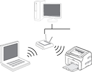
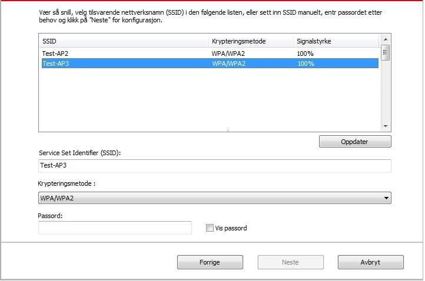

5.Konfigurasjon av trådløst nettverk (egnet for Wi-Fi datatypen)
I henhold til typen er det skrivertypen med Wi-Fi-utskriftsfunksjonen; De trådløse nettverkstilkoblingstypene for infrastrukturtilkoblingsmodus og Soft-AP støttes. Vanligvis, kan det bare være en forbindelse mellom datamaskinen og skriveren. Hvis du har noe problem under den trådløse nettverksinnstillingen, kan du se det vanlige problemet i kapittel 5.3 - Trådløs nettverksinnstilling.
|  | Infrastrukturmodus: Koble til det trådløse utstyret via ruteren. 1. Tilgangspunkt (trådløs router). 2. Trådløs nettverksskriver. 3. Datamaskinen kobler til tilgangspunktet via trådløst netterk. 4. Datamaskinen kobler til tilgangspunktet via nettverkskabelen. |
|
|
Soft-AP Den trådløse datamaskinen er direkte tilkoblet den trådløse enheten. |

5.1.Infrastrukturmodus
Du kan koble datamaskinen til skriveren ved å bruke tilgangspunktet (trådløs router) som medium. Tilkobling av tilgangspunkt (trådløs router) kan klassifiseres til konfigurasjon av trådløst nettverk og Wi-Fi Protected Setup (WPS) - konfigurasjon.
Viktig. Før du installerer det trådløse nettverket, må du vite nettverksnavnet (SSID) og passordet til ditt tilgangspunkt (trådløs ruteren), de vil bli brukt under konfigurasjonen av den trådløse nettverket. Hvis de ikke er bekreftes, vennligst, kontakt nettverksadministratoren eller produsenten av tilgangspunktet (trådløs ruteren).
5.1.1.Konfigurasjonsverktøy for trådløst nettverk
Hvis datamaskinen din har installert driveren og koblet til det trådløse nettverket, men det trådløse nettverket er endret, kan du konfigurere omkonfigurasjonen via konfigurasjonsverktøyet for trådløst nettverk.
5.1.1.1.Tidigare forberedelse
1. Tilgangspunkt (trådløs router).
2. Datamaskinen som allerede har koblet seg til nettverket.
3. Skriveren med funksjonen til trådløst nettverk.
5.1.1.2.Konfigurasjonsmetode til konfigurasjonverktøyet for trådløst nettverk
1. Rope ut konfigurasjonsverktøyet for trådløst nettverk i datamaskinen.
1) Windows system: Klikk på "Start'' menyen - "Alle programmer'' - "Pantum'' - Produktnavn'' - "Konfigurasjonsverktøy for trådløst nettverk'' på datamaskinen.
2) Mac system: Klikk på Finn-menylinjen "Gå''- "Søknad Program''-"Pantum''- "Verktøy''-"Trådløst nettverkskonfigurasjonsverktøy'' på datamaskinen.
2. koble konfigurasjonen ved hjelp av USB-tilkoblingslinjen.
Velg "ja, jeg har USB-kabel som skal brukes til installasjon'' i følgende grensesnitt. Og klikk på "Neste steg''.
2.1.Datamaskinen har koblet seg til det trådløse nettverket.
1) Konfigurasjonsverktøyet for trådløst nettverk velger det trådløse nettverket som er koblet til datamaskinen som standard.Og konfigurasjonen kan fullføres i henhold til instruksjonene på grensesnittet.
 |
Merk: |
• Nettverksnanet (SSID) du velger skal bekrefte til nettverksnanet (SSID) for tilgangspunktet (trådløs ruteren) som er koblet til datamaskinen. |
2) His andre trådløse nettverk trenger å være kobles til, vennligst, sjekk "Nei'' for å konfigurere andre trådløse nettver; Og fullfør konfigurasjonen i henhold til instruksjonene på grensesnittet.

|
Merk: |
• For tiden er det tre sikkerhetsmoduser som støttes av skriveren: nei, WEP og WPA/WPA2. 1) Nei: ingen krypteringsmåte brukes. 2) WEP: Ved å bruke WEP (kablet ekvivalent kryptering), send og motta data med sikker nøkkel. WEP-hemmelig nøkkel er egnet for 64 og 128 digitalt krypterinsnettverk, og tall og bokstaver kan inkluderes samtidig. 3) WPA/WPA2: er hemmelig nøkkel for forhåndsdeling for Wi-Fi-beskyttelsestilgang. Den kobler det trådløse utstyret til tilgangspunktet ved hjelp av TKIP-eller AES kryptering (WPS-Personlig). Brukslengden til WPA/WPA2 er forhåndsdelte hemmelige nøkkelen mellom 8 og 63 tegn. • "Vis passord'' er standard, det skal ikke kontrolleres; Hvis den er merket, vil inntastingspassordet bli vist. |
2.2.Datamaskinen har ikke koblet til det trådløse nettverket.
Putt inn nettverksnavnet SSIS (SSID, saksensitiv) for tilgangspunktet (trådløs ruteren) og passordet i følgende grensesnitt; Og fullfør konfigurasjonen i henhold til instruksjonen på grensesnittet.
|
Merk: |
• Hvis du ikke kjenner nettverksnavnet (SSID) til tilgangspunktet (trådløs ruteren), klikker du på "Skriv ut informasjonssiden for det trådløse nettverket'' for å sjekke det nødvendige nettversnavnet (SSID) for tilgangspunktet (trådløs ruteren). • Etter at du har fullført konfigurasjonen av det trådløse nettverket, må du stasjonere driveren om skriveren ikke kan brukes normalt. |
3. Bruk WPS-tilkobling.
Velg "Nei, jeg har ikke USB-kabel'' I følgende grensesnitt. Og klikk på "Neste steg''.
1) Bruk WPS til å gjennomføre følgende steg for å aktivere trådløst nettverk i skriveren din. (for den spesifikke WPS-konfigurasjonen, se kapittel 5.1.2).
2) His skriveren er koblet til bra, kan den vurderes i henhold til tilstanden til Wi-Fi-indikatorlampen på skriveren. Hvis konfigurasjonen muslykker, klikker på "Siste steg'' for å omkonfigurere; Hvis konfigurasjonen er vellykket, vennligst, klikk på "Fullfør'' for å fullføre konfigurasjonen.
|
Merk: |
• Etter at du har fullført konfigurasjonen av det trådløse nettverket, må du stasjonere driveren om skriveren ikke kan brukes normalt. |
5.1.2.Wi-Fi beskyttet oppsett (WBO) konfigurasjon
Hvis Wi-Fi Beskyttet Oppsett (WPS) støttes av tilgangspunktet (trådløs ruteren), kan skriveren kobles til det trådløse nettverket ved å klikke på Wi-Fi knappen på kontrollpanelet på skriveren og WPS-knappen på tilgangen Punkt (trådløs router).
5.1.2.1.Tidigare forberedelse
1. Wi-Fi Protected Setup (WPS) støttet a tilgangspunktet (trådløs router).
2. Skriveren med funksjonen til trådløst nettverk.
5.1.2.2.Konfigurasjosnmetode for Wi-Fi Protected Set-up (WPS)
1. Slå på skriveren og tilgangspunktet (trådløs router).
2. Kontroller at skriveren er i klar tilstand.
|
Merk: |
• Hvis skriveren går i hvilemodus, trykker du på noen av tastene på kontrollpanelet på skriveren, slik at skriveren kan aktiveres. |
3. Trykk på "Wi-Fi-knappen'' på kontrollpanelet på skriveren i mer enn 2 sekunder til det blå lyset på Wi-Fi-lyset blinker, og slipp deretter knappen.
4. Innen 2 minutter, trykk "WPS knappen'' på tilgangspunktet (trådløs ruteren) og slipp deretter knappen.
5. Det trådløse nettverket utføres for tilgangspunktet (trådløs router) og skriver, blinker det blå lyset på Wi-Fi lampen på skriveren. Etter vellykket tilkobling vil det blå lyset a Wi-Fi-lampen på skriveren være hele tiden.
Hvis tilkoblingen ikke er etablert i mer enn 2 minutter, går skriveren tilbake til klar tilstand og Wi-Fi-lampen slukker, og Wi-Fi Protected Setup (WPS) - tilkoblingen mislykkes. His det kreves re-tilkobling, må du gjenta det tredje pg fjerde trinnet.
|
Merk: |
• Etter den vellykkede tilkoblingen a Wi-Fi Protected Setup (WPS), må du installere driveren hvis du vil skrive ut gjennom veien for trådløst nettverk. |
5.1.3.Slik lukker du det tilkoblede Wi-Fi-nettverket
Fullfør den trådløse netterksforbindelse til infrastrukturmodusen i henhold til trinnene ovenfor, og Wi-Fi-lampen på det tilkoblede kontrollpanelet vil være på hele tiden. Trykk for øyeblikket på denne knappen i mer enn 2 sekunder for å koble fra Wi-Fi (Wi-Fi-lyset slår av).
5.2.Wi-Fi-hotspot modus
Du kan ikke bruke tilgangspunktet (trådløs ruteren) for å koble datamaskinen med den trådløse nettverksskriveren.
5.2.1.Tidigare forberedelse
1. Skriveren med funksjonen til Wi-Fi-hotspot.
2. Datamaskiner med trådløs nettverksfunksjon.
5.2.2.Wi-Fi hotspottilkobling
Slå på skriverens Wi-Fi-hotspot før skriverens hotspot. Denne funksjonen aktiveres ved å logge på den innebygde nettserveren. Trykk "Innstillinger" - "Trådløse innstillinger" - "Trådløs hotspot" for å sette status til "På".
5.2.3.Konfigurasjon med Soft-AP
Når Wi-Fi Hotspot er aktive kan brukere av terminal (stasjon) finne og koble til skriverens Wi-Fi Hotspot ved å søke etter den. Wi-Fi-sone er aktivert som standard, og standardpassordet er 12345678. SSID og passord for skriveren finnes i rapporten Print Information Page.
5.3.Vanlig problem med trådløs nettverksinnstillimg
1. Skriveren er ikke funnet
• Hvis strømmer til maskinen, tilgangspunkt (trådløs router) eller skriveren er slått på.
• Hvis USB-tilkoblingslinjen er koblet mellom datamaskinen og skriveren.
• Hvis den trådløse nettverksforbindelse støttes av skriveren.
2. Nettverksnavnet (SSID) kan ikke bli funnet når nettverket er koblet til.
• Kontroller om strømbryteren til tilgangspunktet (trådløs router) er på.
• Hvis skriveren ikke finner nettverksnavnet (SSID) for tilgangspunktet (trådløs ruteren) som trenger å være tilkoblet, vennligst, sjekk nettverksnavnet (SSID) og prøv å koble til igjen.
• Når konfigurasjonen a tilgangspunktet (trådløs ruteren) endres, må du stille inn det trådløse nettverket til skriveren.
3. Tilkoblingen mislykkes
• Vennligst, kontroller om sikker modus og passord for tilgangspunktet (trådløs router) og skriveren er riktige.
• Kontroller omliggende trådløs mottak av skriveren. Hvis det er langt borte fra skriveren eller hvis det er hindet i senteret, kan mottak av signal påvirkes.
• Slå av strømmen til tilgangspunktet (trådløs ruteren) og skriveren, og konfigurer etter gjenoppstart.
4. Hvis det oppstår et problem når du brukes skriveren i nettverket, må du kontrollere følgende aspekter:
• Sjekk om kommunikasjonen er blokkert av brannmurprogramvaren. Hvis datamaskinen og skriveren er koblet til det samme nettverket, men de ikke kan søges, kan kommunikasjonen bli blokkert av brannmurprogramvaren. Vennligst se brukerhåndboken til brannmurprogramvaren, lukk brannmuren og prøv å undersøke skriveren på nytt.
• Kontroller om IP-adressen til skriveren er riktig. Du kan skrive ut siden av nettverkskonfigurasjonsinformasjon for å sjekke IP-adressen.
• Vennligst se følgende trinn for å sjekke om skriver og Datamaskinen er i samme nettverk:
1) Velg “Ledetekst" som vist nedenfor.
a. Windows 8/10-system: Velg "Søk" -knappen i Start-menyen og skriv inn “ledetekst" i søkefeltet, og trykk deretter på "Enter" -knappen på tastaturet.
b. Windows 7 / Vista / XP-system: klikk "Start" -menyen - "Alle prosedyrer" - "Vedlegg" - “Ledetekst".
2) Tast inn ping og din printers IP-adresse i popup-vinduet, og press “Enter” -knappen.
Til eksempel: ping XXX.XXX.XXX.XXX(“XXX.XXX.XXX.XXX” er printerens IP-adresse)
3) Hvis RTT er angitt i vinduet, vil det si at skriveren og Datamaskinen er i samme nettverk.Hvis RTT ikke er angitt i vinduet, vennligst se kapittel 5 for å omkonfigurere skriverens trådløse nettverk.
|
Merk: |
• For informajon om tilgangspunktet (trådløs router), vennligst se brukerhåndboken eller kontakt produsenten. |